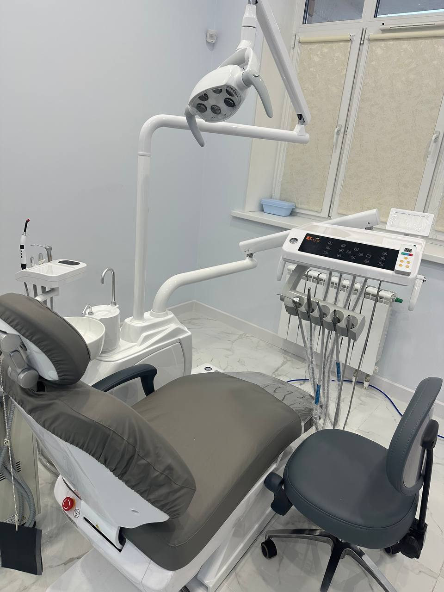
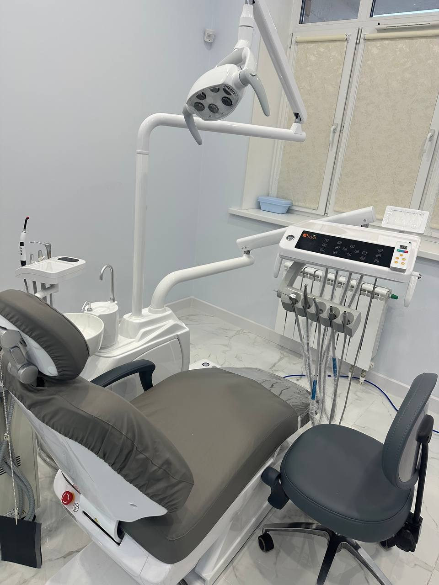

Высшее качество
диагностики
и лечения
Помощь
в шаге
от Вас!

.svg)
.svg)
 

20+Персонал клиники
Мы рядом,
когда это важно
Медицинский центр «Врачебная практика» — это современная клиника, где забота о вашем здоровье стоит на первом месте. Мы предлагаем широкий спектр медицинских услуг, включая диагностику, консультативные приемы специалистов и круглосуточную стоматологию. В клинике созданы комфортные условия для пациентов любого возраста.
- Круглосуточная стоматология
- Все виды анализов
- Опытные специалисты
- Современное оборудование
Мы понимаем, как важно своевременно выявить проблему и найти оптимальное решение. Независимо от сложности ситуации, мы всегда готовы помочь вам и вашим близким. Ваше здоровье — наша забота!
Получить консультацию
Весь спектр медицинских
услуг в одном месте
- ЭКГ и холтеровское мониторирование
- Диагностика и лечение гипертонии
- Лечение сердечной недостаточности
- Консультации
- Лечение ОРВИ и простуды
- Контроль хронич. заболеваний
- Обследование и анализы
- Подбор терапии
- Диагностика головных болей и мигрени
- Лечение заболеваний позвоночника
- Терапия нервных расстройств
- Лечение последствий инсульта
- Тейпирование и блокады
- Лечение цистита и уретрита
- Диагностика заболеваний простаты
- Терапия мочекаменной болезни
- Лечение мужского бесплодия
- Kечение заболеваний шейки матки
и вульвы; - Эстетическая коррекция НПО
- Лечение легких форм недержания
- Диагностика и лечение гастрит
- Терапия синдрома раздраженного кишечника
- Обследование печени, желч. пузыря
- Лечение язвенной болезни
- Лечение гайморита и синусита
- Удаление серных пробок
- Терапия заболеваний уха, горла, носа
- Эндоскопическая диагностика
- Диагностика и лечение бронхита
- Лечение бронхиальной астмы
- Терапия хронических легочных заболеваний
- Диагностика и лечение сахарного диабета
- Обследование щитовидной железы
- Коррекция гормональных нарушений
- Лектротерапия и магнитотерапия
- Лечение ультразвуком и лазером
- Реабилитация после травм и операций
- Комплексное восстановление
- УЗИ брюшной полости и почек
- УЗИ щитовидной железы
- УЗИ сосудов и сердца
- УЗИ органов малого таза
- ЭКГ и холтер мониторирование
- СМАД
- Спирография
- Диагностика сердца
Квалифицированные специалисты клиники
Врачебная практика
Ответь на 3 вопроса
и получи скидку
на весенний чек-ап
Весна — время обновления не только природы, но и организма! После зимы иммунитет ослаблен, возможен дефицит витаминов, да и общее самочувствие может подводить. Пройди весенний чек-ап, чтобы проверить основные показатели здоровья и встретить теплый сезон в полной силе!
ПройтиПроверьте уровень витамина D со скидкой в 30%
Чувствуете постоянную усталость, плохое настроение или ломкость ногтей? Возможно, всему виной нехватка витамина D! Этот витамин отвечает за крепкие кости, ммунитет и даже настроение. Сдай анализ, чтобы узнать, хватает ли тебе «солнечного» витамина, и при необходимости скорректируйте уровень.
ЗаписатьсяКвалифицированные специалисты клиники Врачебная практика

Ватоян Марине
Аршалуисовна
А так же, наши врачи
постоянно учатся
и проходят повышение
квалификации
Главное в работе с пациентом - это заинтересованность, сочувствие, забота и желание оказать
квалифицированную помощь
Начните заботу о себе
прямо сейчас
Записаться
Нужна срочная консультация
профильного врача?
Консультация
Первоклассные стоматологические услуги
Улыбка — это твоя визитная карточка! Регулярный уход за зубами помогает избежать боли, сложного лечения и сохранить белоснежную улыбку. Запишись на прием, чтобы проверить здоровье зубов и десен — профилактика всегда проще, чем лечение! В клинике работают специалисты:
- ортодонт
- стоматолог-хирург
- стоматолог-терапевт
- стоматолог-имплантолог
- стоматолог-ортопед
Провели более
20
успешых протезирований
за последний месяц
Среднее время лечения кариеса
30-60
минут